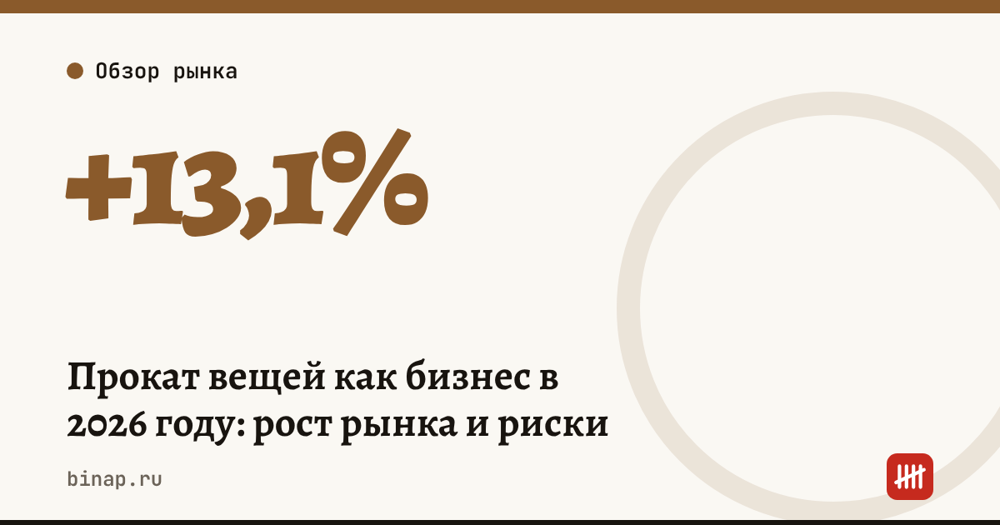

Прокат вещей как бизнес в 2026 году: рост рынка и риски

Прокат вещей — от лыж и велосипедов до инструментов и детских товаров — привлекает всё больше предпринимателей. Но рост числа компаний ещё не означает, что каждой из них хватает клиентов.
Коротко
- По данным «Ведомостей», которые ссылаются на исследование «Авито» и банка «Точка», в октябре 2026 года в сегменте аренды и проката вещей было 9 154 компании — на 13,1% больше, чем в ноябре 2025 года.
- Быстрее всего растёт прокат товаров для спорта и отдыха: +15,3%, до 5 203 компаний. Это больше половины сегмента.
- При этом, по тем же данным, средние обороты компаний в категориях с начала 2026 года снизились: игроков стало больше, а выручка на каждого — меньше.
- Пик регистраций приходится на период перед Новым годом, поэтому часть роста может быть сезонной.
Сроки, изменения и разборы для ИП и самозанятых — каждое утро в Telegram и MAX. Подпишитесь, чтобы не пропустить.
Рынок в цифрах
| Показатель | Значение |
|---|---|
| Компаний в аренде и прокате вещей, октябрь 2026 | 9 154 |
| Рост с ноября 2025 года | +13,1% |
| Прокат товаров для спорта и отдыха | 5 203 компании, +15,3% |
| Средние обороты в категориях с начала 2026 года | снизились |
Источник всех цифр — одно исследование («Авито» и «Точка»), пересказанное «Ведомостями». Методика подсчёта (какие виды деятельности и какие компании учитывались) в пересказе не раскрыта полностью, поэтому цифры стоит воспринимать как ориентир, а не как точный размер рынка.
Почему прокат растёт и где подвох
Прокат удобен покупателю: не нужно покупать вещь, которой пользуешься пару раз в год. Для предпринимателя вход кажется простым — купил несколько единиц, разместил объявления, сдаёшь.
Подвох в трёх местах:
- Сезонность. Лыжи и сноуборды зарабатывают зимой, велосипеды и сапборды — летом. В межсезонье вещь стоит и не приносит денег, а аренда склада идёт.
- Конкуренция. Если новых игроков больше, чем новых клиентов, средний оборот падает — именно это и видно в исследовании.
- Износ и порча. Вещь теряет в цене с каждой выдачей, часть возвращают сломанной. Без залога и договора убытки ложатся на вас.
Как посчитать окупаемость одной вещи
Пример (расчёт редакции, цифры условные): велосипед куплен за 40 000 ₽, сутки аренды — 1 000 ₽.
| Показатель | Значение |
|---|---|
| Сезон | 5 месяцев, около 150 дней |
| Загрузка | 40% — 60 дней аренды |
| Выручка за сезон | 60 000 ₽ |
| Ремонт и обслуживание | 6 000 ₽ |
| Комиссии площадок и эквайринг (10%) | 6 000 ₽ |
| Налог УСН 6% с выручки | 3 600 ₽ |
| Остаток до аренды помещения и зарплат | 44 400 ₽ |
Покупка окупается за один сезон — но только при загрузке 40%. При загрузке 20% остаток — около 22 000 ₽, и вещь окупится лишь на второй сезон, когда она уже изношена. Подставьте свои цены и честную загрузку, а не лучшие выходные.
Отдельно учтите постоянные расходы: помещение или склад, доставку, рекламу, ваше время. Их нужно покрыть всем парком вещей.
Что проверить перед запуском
- Спрос в вашем городе. Посмотрите на «Авито» и в картах, сколько прокатов уже работает и какие у них цены.
- Два сезона. Лучше, если ассортимент закрывает и зиму, и лето — так меньше простоя.
- Договор и залог. Пропишите состояние вещи при выдаче, залог и ответственность за порчу. Фотографируйте вещь при выдаче и возврате.
- Форма бизнеса. Сдавать в аренду своё имущество можно и на НПД — ставка 4% с физлиц и 6% с компаний, лимит 2,4 млн ₽ в год. Подробнее — в статье как стать самозанятым. Если планируете нанимать сотрудников или выручка будет больше лимита — нужен ИП: как открыть ИП онлайн.
- Налог. Если расходы на ремонт и закупку большие, сравните объекты УСН — в статье «доходы» или «доходы минус расходы».
- Страховка. Для дорогого парка — посмотрите, нужна ли страховка имущества.
Частые вопросы
Сколько компаний занимаются прокатом вещей? По данным исследования «Авито» и «Точки», на октябрь 2026 года — 9 154 компании, на 13,1% больше, чем в ноябре 2025 года.
Какой прокат растёт быстрее всего? Прокат товаров для спорта и отдыха: +15,3%, до 5 203 компаний.
Можно ли сдавать вещи в прокат как самозанятый? Да, сдача в аренду своего движимого имущества на НПД разрешена. Нельзя нанимать работников и перепродавать чужие товары, лимит дохода — 2,4 млн ₽ в год.